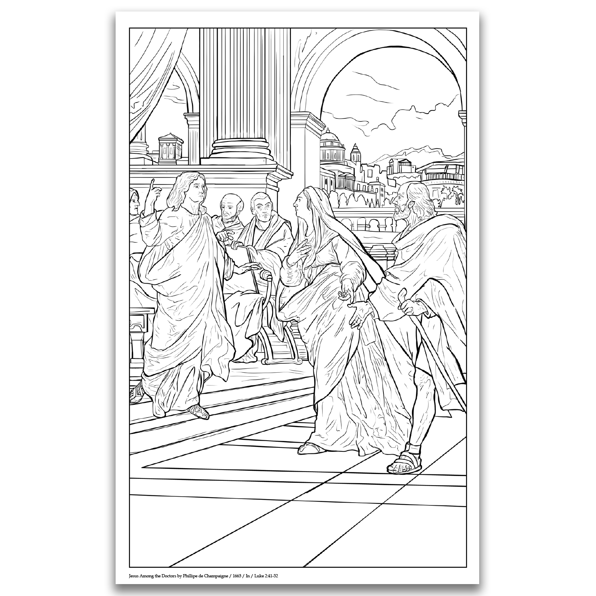

Our goal
Entertain. Instruct. Inspire.
The Life of Jesus project develops a series of Christian coloring books from the greatest religious paintings in history — carefully reformatted so people can linger with the images, learn the story, and share beauty as a gift.
The tone is broad and welcoming: the shared Christian story and the shared masters of classical art. A place of comfort first — then a shop when you’re ready.
As featured in the January 22, 2023 edition of the Catholic Register.
Voices
What people and partners say
Press, parish programs, and pastoral care have already found a home for these books.
“Pope John Paul II once stated that the purpose of art is nothing less than the uplifting of the human spirit. … Their actions suggest they embrace the maxim of art being nourishment for society’s soul.”
Quinton Amundson · Author, Catholic Register“The Out of the Cold program provides meals for the needy throughout our Canadian winters. Our 17 affiliated Churches were pleased to use the Life of Jesus book as a fundraising tool.”
Susan Venditti · Executive Director, Out of the Cold, St. Catharines“The Life of Jesus is a work of art in its own right! We were pleased to be associated with it. We look forward to using it to raise money for our community projects for years to come.”
Tracey Weir · Funeral Director, Toronto